I am a Ph.D. student at POSTECH (Pohang University of Science and Technology) in the Department of Electrical Engineering, advised by Prof. Tae-Hyun Oh at the Algorithmic Machine Intelligence (AMI) Lab. My research interests lie in audio-visual learning, multi-modal learning, cross-modal generation, and multi-modal large language models.
Experiences

Adobe Research
San Francisco, CA, USA
Jun. 2026 – Sep. 2026
Research Intern · Sound Design AI (SODA) Group
Video-to-audio generation and linearizing audio codecs.
Speech, Audio, and Language Technologies Lab, UT Austin
Austin, TX, USA
Sep. 2024 – Mar. 2025
Visiting Researcher
Automated video dubbing, advised by Prof. David Harwath.
ROK
Army
Army
Vanguard Unit, Republic of Korea Army
Cheorwon, South Korea
Sep. 2016 – Jun. 2018
Sergeant (Mandatory Military Service)
Publications
Papers are sorted by recency. 20 shown · * denotes equal contribution.
Conference · Under Review2026
Retrofitting Linearity into Pretrained Audio Codecs
Under review
Conference2026
Hear, Localize, and Reason: Spatially Aware Scene Understanding for Audio-Visual LLMs
NeurIPS 2026 (Accepted)
Conference2026

FacEDiT: Unified Talking Face Editing and Generation via Facial Motion Infilling
NeurIPS 2026 (Accepted)
Conference2026
Physics-Aware Deepfake Detection via Distance–Speech Consistency
Interspeech 2026
Conference2026
Efficient Hyper-Parameter Search for LoRA via Language-aided Bayesian Optimization
ICML 2026
Conference2026
SMILE-Next: Teaching Large Language Models to Detect, Classify, and Reason about Laughter
ACL 2026 (Oral)
Conference2025
AlignDiT: Multimodal Aligned Diffusion Transformer for Synchronized Speech Generation
ACM Multimedia 2025
Conference2025
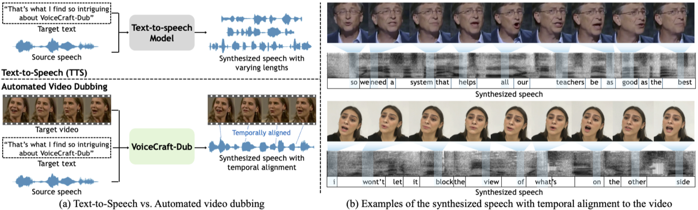
VoiceCraft-Dub: Automated Video Dubbing with Neural Codec Language Models
ICCV 2025
Conference2025
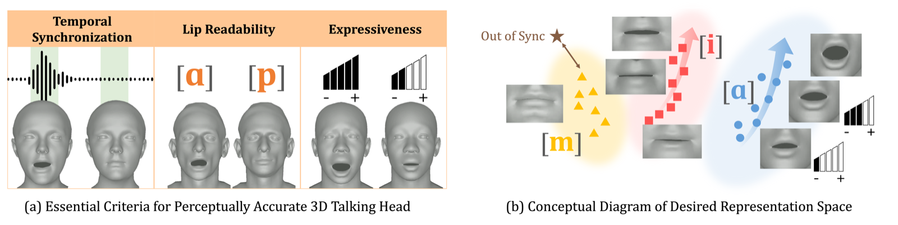
Perceptually Accurate 3D Talking Head Generation: New Definitions, Speech-Mesh Representation, and Evaluation Metrics
CVPR 2025 (Highlight, 3.7%)
Conference2025
Conference2025
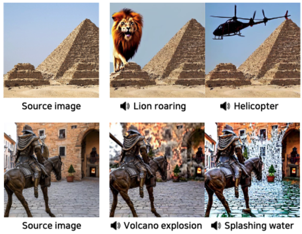
Conference2024
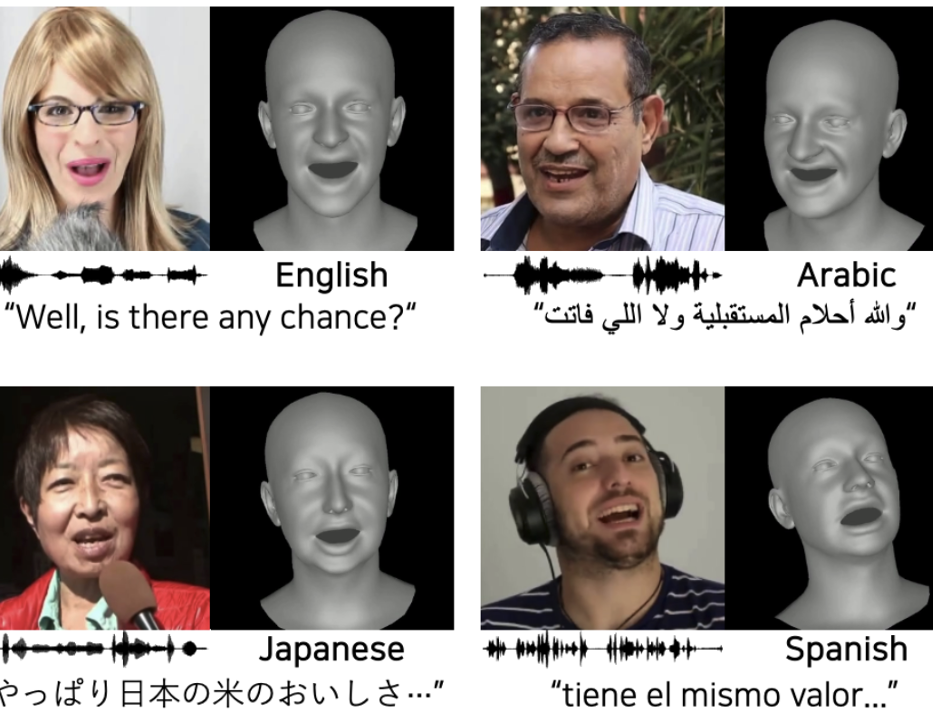
MultiTalk: Enhancing 3D Talking Head Generation Across Languages with Multilingual Video Dataset
Interspeech 2024
Conference2024
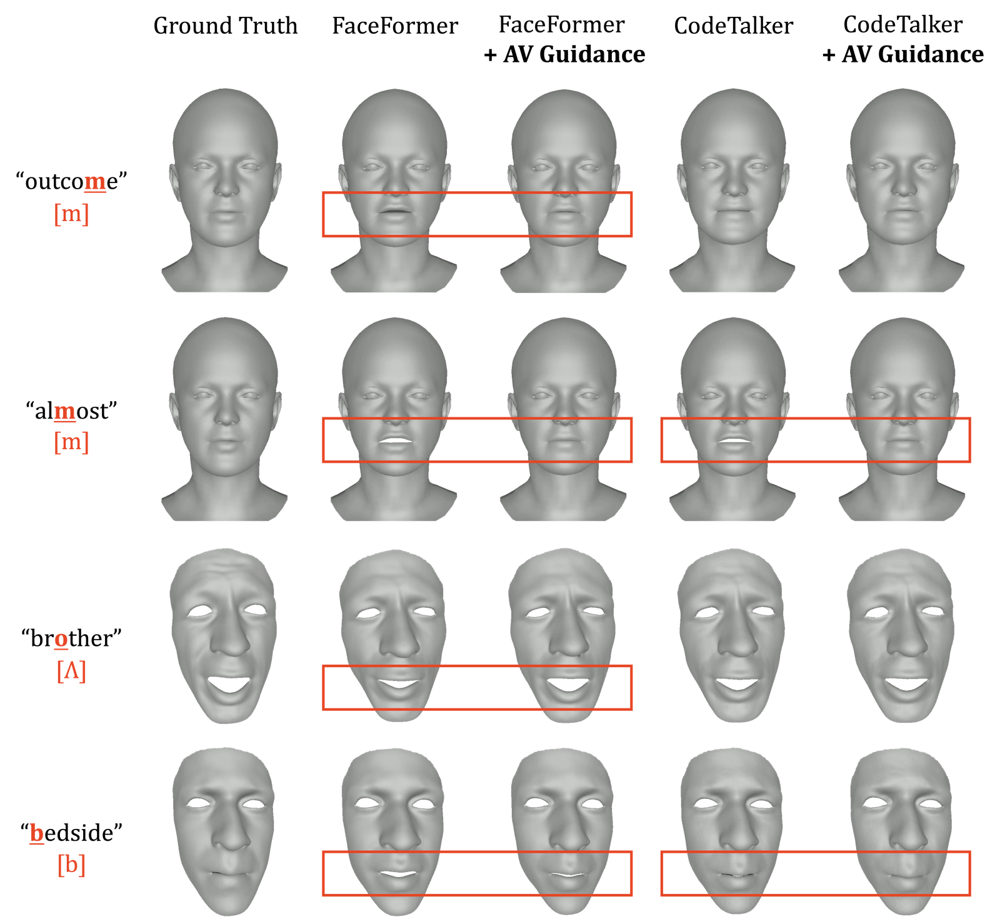
Enhancing Speech-Driven 3D Facial Animation with Audio-Visual Guidance from Lip Reading Expert
Interspeech 2024
Conference2024
Conference2024
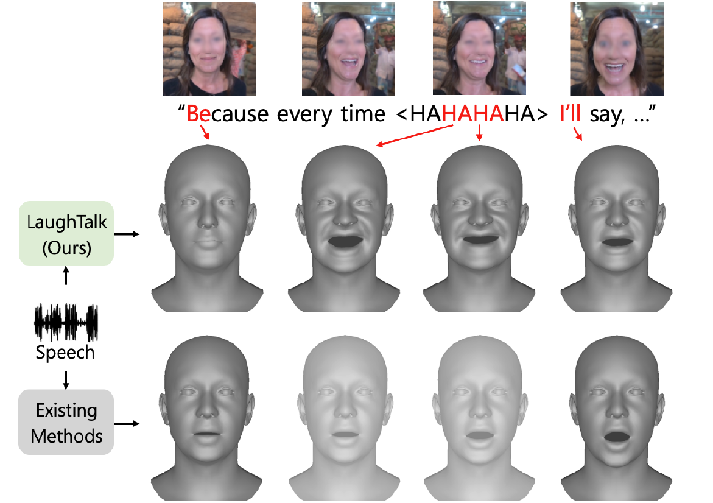
Journal2026
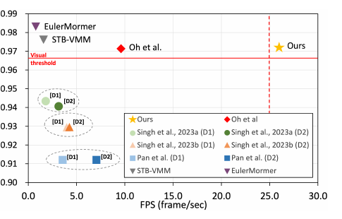
Revisiting Learning-based Video Motion Magnification for Real-time Processing
Transactions on Machine Learning Research (TMLR), 2026
Journal2024
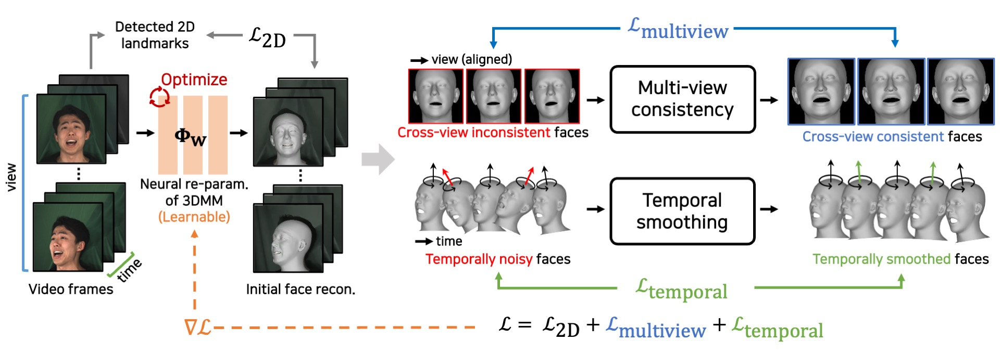
A Large-Scale 3D Face Mesh Video Dataset via Neural Re-parameterized Optimization
Transactions on Machine Learning Research (TMLR), 2024
Journal2024
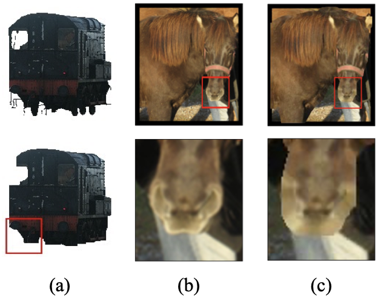
The Devil is in the Details: Simple and Effective Optical Flow Synthetic Data Generation
The Visual Computer, 2024
Workshop2023
Spatio-Temporally Consistent Face Mesh Reconstruction on Videos
CVPR Workshop on 3DMV, 2023
Conference2023
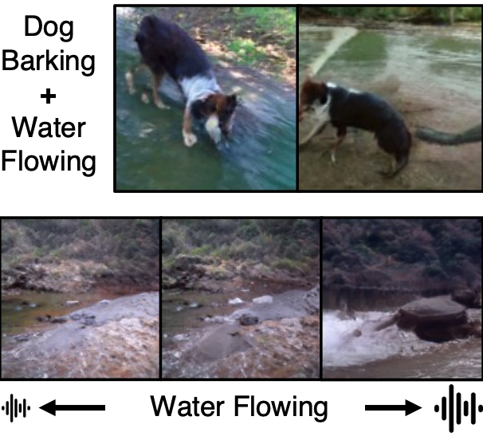
Sound to Visual Scene Generation by Audio-to-Visual Latent Alignment
CVPR 2023
Covered by Yonhap News, SBS, and local media; also presented at AI4CC (CVPR 2023), AV4D (ICCV 2023), and the Sound to Sight workshop (CVPR 2023, invited talk).
Conference2023
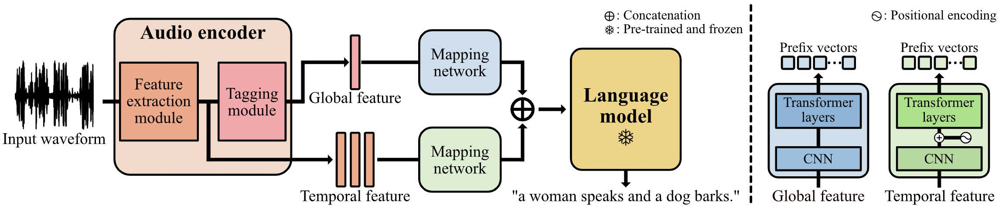
Prefix Tuning for Automated Audio Captioning
ICASSP 2023 (Oral)
Covered by Yonhap News and SBS.
Journal2021
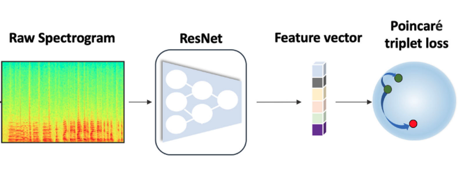
Lightweight Speaker Recognition with Discriminative Mapping in Poincaré Spaces
IEEE Signal Processing Letters, 2021
Domestic Conference2020
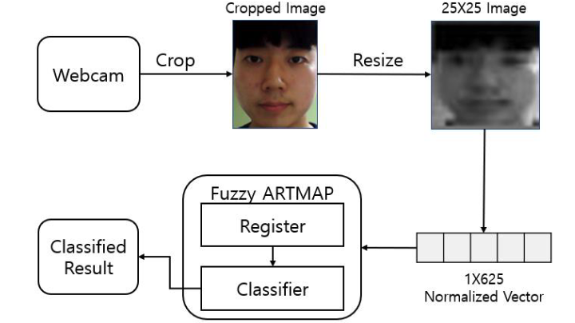
Real-time Face Registration and Classification System using Fuzzy ARTMAP
ICROS 2020 (Best Student Paper Award)
Journal · Under Review2024
Education
POSTECH
Pohang, South Korea
Mar. 2023 – Present
Ph.D. in Electrical Engineering
Advisor: Tae-Hyun Oh
· AMI Lab
POSTECH
Pohang, South Korea
Mar. 2021 – Feb. 2023
M.S. in Electrical Engineering
Advisor: Tae-Hyun Oh
· AMI Lab
Thesis: Learning to Generate Visual Scene and Text Description from Sound
Handong Global University
Pohang, South Korea
Mar. 2015 – Aug. 2020
B.S. in Electrical Engineering
Summa Cum Laude
Honors and Awards
- Outstanding Reviewer CVPR 2026 · Jun. 2026
- SBS Cultural Foundation Scholarship Full-ride scholarship for Ph.D. studies (up to $75,000 over four years) · Aug. 2023 – Present
- Summa Cum Laude Handong Global University · Aug. 2020
- Best Student Paper Award ICROS 2020 (Institute of Control, Robotics and Systems Annual Conference) · Jul. 2020
- National Science & Technology Scholarship Full-ride scholarship during B.S. studies (total $24,000) · Mar. 2015 – Aug. 2020
Academic Service
Journal Reviewer
- IJCV
- IEEE/ACM TASLP
- TMLR
Conference Reviewer
- CVPR
- ICCV
- ECCV
- ICML
- ICLR
- NeurIPS
- SIGGRAPH
- BMVC
- ACM Multimedia
Teaching Experience
POSTECH
Jan. 2021 – Dec. 2021
Teaching Assistant · Visual Intelligence
NAVER & UPSTAGE BoostCamp
Jan. 2021 – May 2021
Mentor · Computer Vision
Patents
- Image Generating Apparatus U.S. patent application · P2023111-03-US
- Motion Amplification Devices and Method of Using Thereof Republic of Korea · 10-2021-0184021